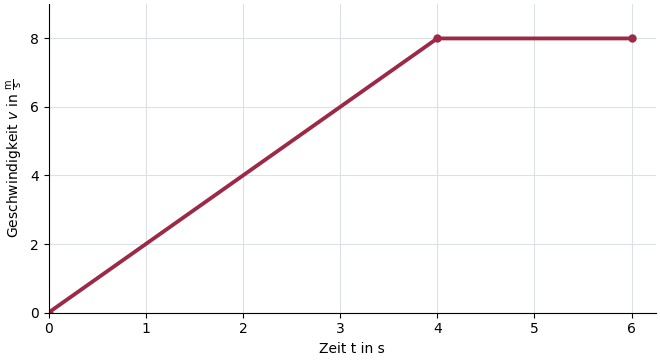

Zeit-Geschwindigkeit-Diagramm
Im Zeit-Geschwindigkeit-Diagramm steht die Zeit t auf der waagrechten Achse, die Geschwindigkeit v auf der senkrechten. Ein waagrechter Abschnitt bedeutet konstante Geschwindigkeit. Ein geradlinig steigender Abschnitt zeigt eine konstante positive Beschleunigung.

Steigung auswerten
Die Steigung des ersten Abschnitts ergibt eine Beschleunigung von . Im waagrechten Abschnitt ist die Beschleunigung null.